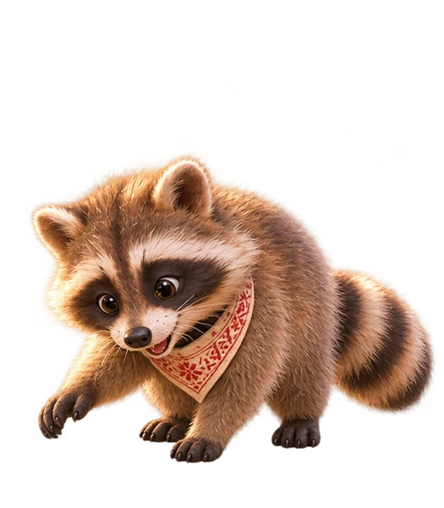
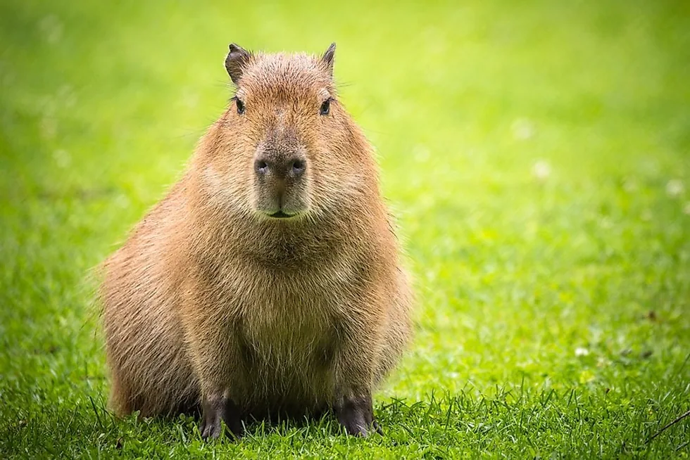

Загружаем домик…
Перетащи яблоко к лапам
Как назовём енота?
Не удалось сохранить имя на устройстве. Проверь свободное место и нажми «Готово» ещё раз.

Чем угостить?
Лесные пары
Открой две карточки с одинаковым животным.
Все пары найдены!

Капибара
Парк животных
Барановичи
Кормления
Зона «Казачны мір»
Изменения на дату поездки уточняйте в парке.
Расписание на сайте паркаHydrochoerus hydrochaeris
Капибара
Глаза и уши капибары расположены высоко. Во время плавания они остаются над водой, даже когда почти всё тело погружено.
- Родина
- Южная Америка
- Масса тела
- 35–70 кг
Для посетителей
Как связаться с парком
Деревня Глинище, Малаховецкий с/с 31, Барановичский район.
Колл-центр · +375 29 303 17 17 support@animal-park.by Все контакты ↗Правила прогулки
- Дети младше 14 лет посещают парк со взрослым.
- Угощать животных принесённой из дома едой запрещено.
- Оставайтесь на дорожках. Не просовывайте руки в вольеры.
- Домашних питомцев оставьте дома.
Где перекусить и отдохнуть
У входа в первую зону есть мини-кафе. На территории также работают кафе с террасой и киоски у озера.
Обед для группы · +375 44 713 75 25 Кафе и фотографии ↗Помочь парку
Условия программы опеки над животными публикует парк.
Программа опеки · PDF, 83 МБ ↗Обзорная экскурсия
Прогулка с экскурсоводом по одной из двух зон парка.
- Длительность
- Около 1,5 часа
- Группа
- До 25 человек
Выберите «Казачны мір» или «Лясныя таямніцы». Дату и время согласуйте с парком заранее.
Подать заявку в парк ↗ Позвонить · +375 44 732 92 19 Цены и условия на сайте парка ↗Карта парка
Выберите пешеходную зону


Животные
 ХищныеЕнот-полоскун
ХищныеЕнот-полоскун
 ПриматыКошачий лемур
ПриматыКошачий лемур
 ХищныеКаракал
ХищныеКаракал
 ПарнокопытныеЕвропейский зубр
ПарнокопытныеЕвропейский зубр
 ПриматыЭдипов тамарин
ПриматыЭдипов тамарин
Таких животных в подборке нет.
Потри шерсть губкой
Сундук с играми
Лови яблоки
Веди корзинку пальцем. Поймай 5 из 8 яблок.
Награда за уровень
Тестовая касса. Оплата не списывается.
Демо-тарифы · детский 10 BYN, взрослый 15 BYN